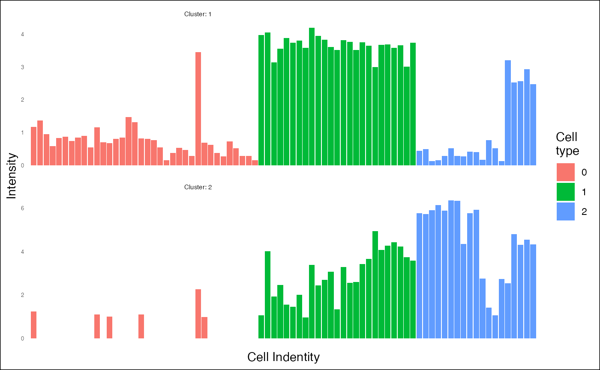

R/convert.R
cluster_set_from_seurat.RdTransform a Seurat objects into a ClusterSet.
cluster_set_from_seurat(
object = NULL,
markers = NULL,
layer = c("data", "counts", "scale.data"),
assay = "RNA",
p_val_adj = 0.001
)A Seurat object.
A Seurat::FindAllMarkers() result or a named vector (clusters with gene_names as named). Named vectors can contains several position with the same gene name (overlapping clusters).
One of 'data', 'counts' or 'scale.data'. The slot to extract from the seurat object to perform clustering analysis. SCT is the recommended method from Seurat package when working with spatial transcriptomics data.
The type of assay (e.g. "RNA", "Spatial", "Sketch", "SCT"...).
If markers is the output from Seurat::FindAllMarkers(), the adjusted p-value threshold.
## From a scRNA-seq/Seurat object
library(SeuratObject)
#> Loading required package: sp
#> ‘SeuratObject’ was built under R 4.4.0 but the current version is
#> 4.4.1; it is recomended that you reinstall ‘SeuratObject’ as the ABI
#> for R may have changed
#>
#> Attaching package: ‘SeuratObject’
#> The following objects are masked from ‘package:base’:
#>
#> intersect, t
library(Seurat)
data("pbmc_small", package="SeuratObject")
markers <- Seurat::FindAllMarkers(pbmc_small, only.pos = TRUE)
#> Calculating cluster 0
#> Calculating cluster 1
#> Calculating cluster 2
cs <- cluster_set_from_seurat(pbmc_small, markers)
#> |-- INFO : Computing centers.
cs <- top_genes(cs)
#> |-- INFO : One or several clusters contain less than 20 genes. Retrieving all genes
#> |-- INFO : Results are stored in 'top_genes' slot of the object.
plot_heatmap(cs)
#> |-- INFO : cell_clusters is not NULL. Setting show_dendro to FALSE
#> |-- INFO : Centering matrix.
#> |-- INFO : Ceiling matrix.
#> |-- INFO : Flooring matrix.
#> |-- INFO : Ordering cells/columns using hierarchical clustering.
#> |-- INFO : Plotting heatmap.
#> |-- INFO : Plot is interactive...
plot_heatmap(cs)
#> |-- INFO : cell_clusters is not NULL. Setting show_dendro to FALSE
#> |-- INFO : Centering matrix.
#> |-- INFO : Ceiling matrix.
#> |-- INFO : Flooring matrix.
#> |-- INFO : Ordering cells/columns using hierarchical clustering.
#> |-- INFO : Plotting heatmap.
#> |-- INFO : Plot is interactive...
plot_heatmap(cs[2, ])
#> |-- INFO : cell_clusters is not NULL. Setting show_dendro to FALSE
#> |-- INFO : Centering matrix.
#> |-- INFO : Ceiling matrix.
#> |-- INFO : Flooring matrix.
#> |-- INFO : Ordering cells/columns using hierarchical clustering.
#> |-- INFO : Plotting heatmap.
#> |-- INFO : Plot is interactive...
plot_heatmap(cs, cell_clusters = Seurat::Idents(pbmc_small))
#> |-- INFO : Extracting cell identity.
#> |-- INFO : Centering matrix.
#> |-- INFO : Ceiling matrix.
#> |-- INFO : Flooring matrix.
#> |-- INFO : Plotting heatmap.
#> |-- INFO : Plot is interactive...
plot_heatmap(cs[1,Idents(pbmc_small) == "0"],
cell_clusters = Seurat::Idents(pbmc_small), label_size = 6)
#> Warning: |-- WARNING : The ClusterSet object does not contain any gene.
#> Warning: |-- WARNING : The ClusterSet object does not contain any gene.
#> |-- INFO : Extracting cell identity.
#> |-- INFO : Centering matrix.
#> |-- INFO : Ceiling matrix.
#> |-- INFO : Flooring matrix.
#> |-- INFO : Plotting heatmap.
#> Error in m[order(nrow(m):1), ]: subscript out of bounds
plot_profiles(cs, ident = Seurat::Idents(pbmc_small))
#> |-- INFO : Number of cells types: 3
#> |-- INFO : Number of cells: 80
#> Warning: Removed 80 rows containing missing values or values outside the scale range (`geom_col()`).
#> Warning: Removed 1 row containing missing values or values outside the scale range (`geom_text()`).
